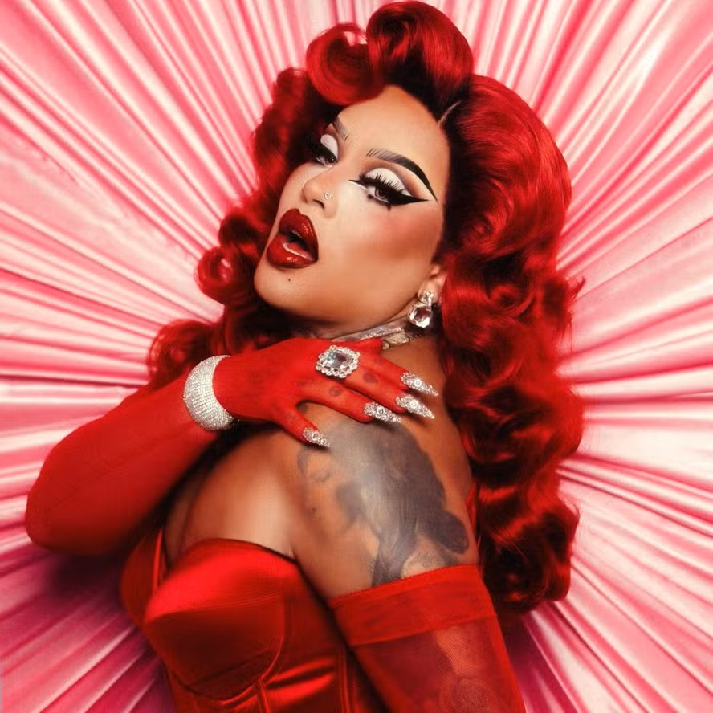
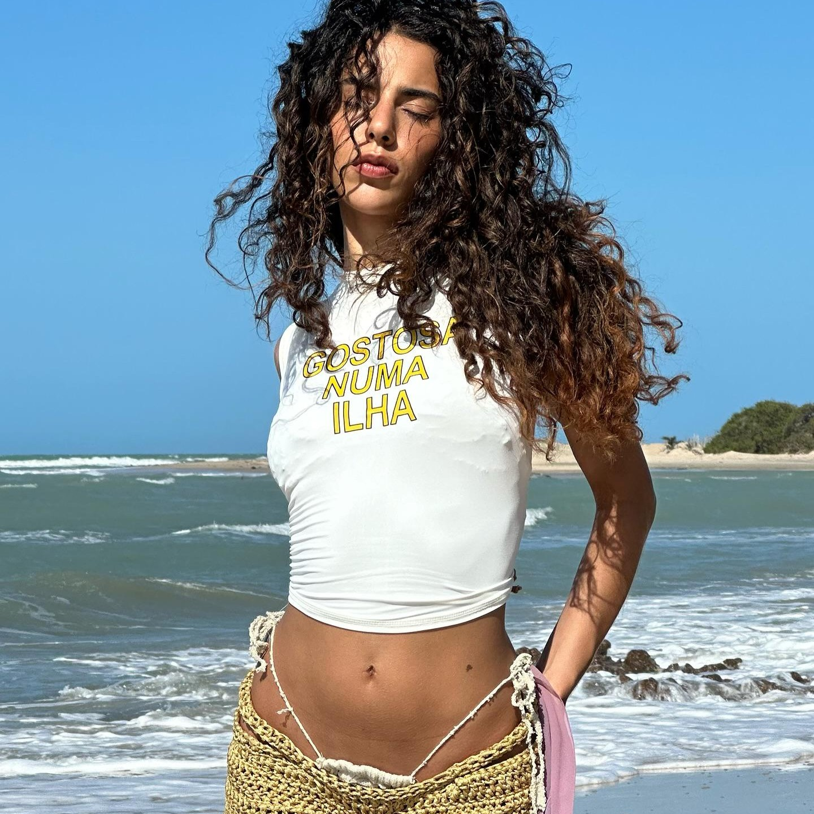
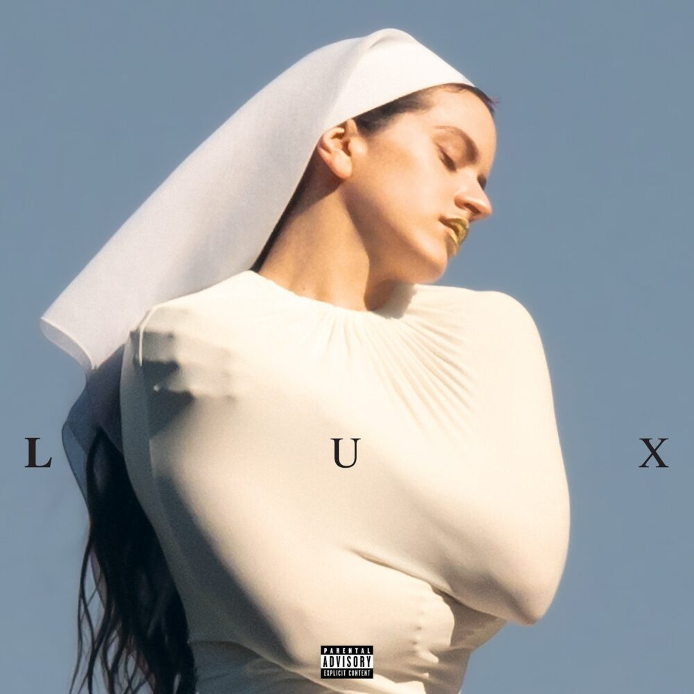
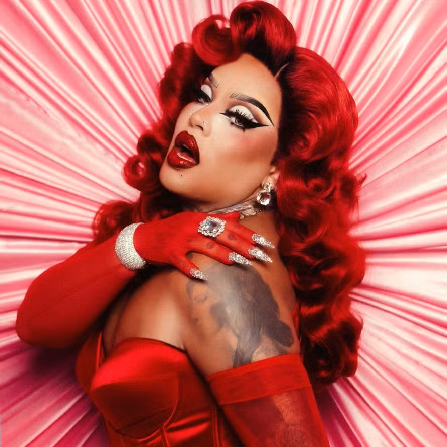
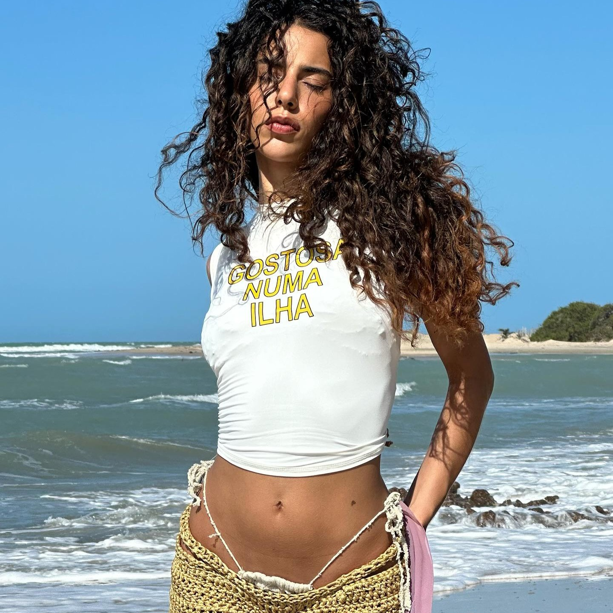
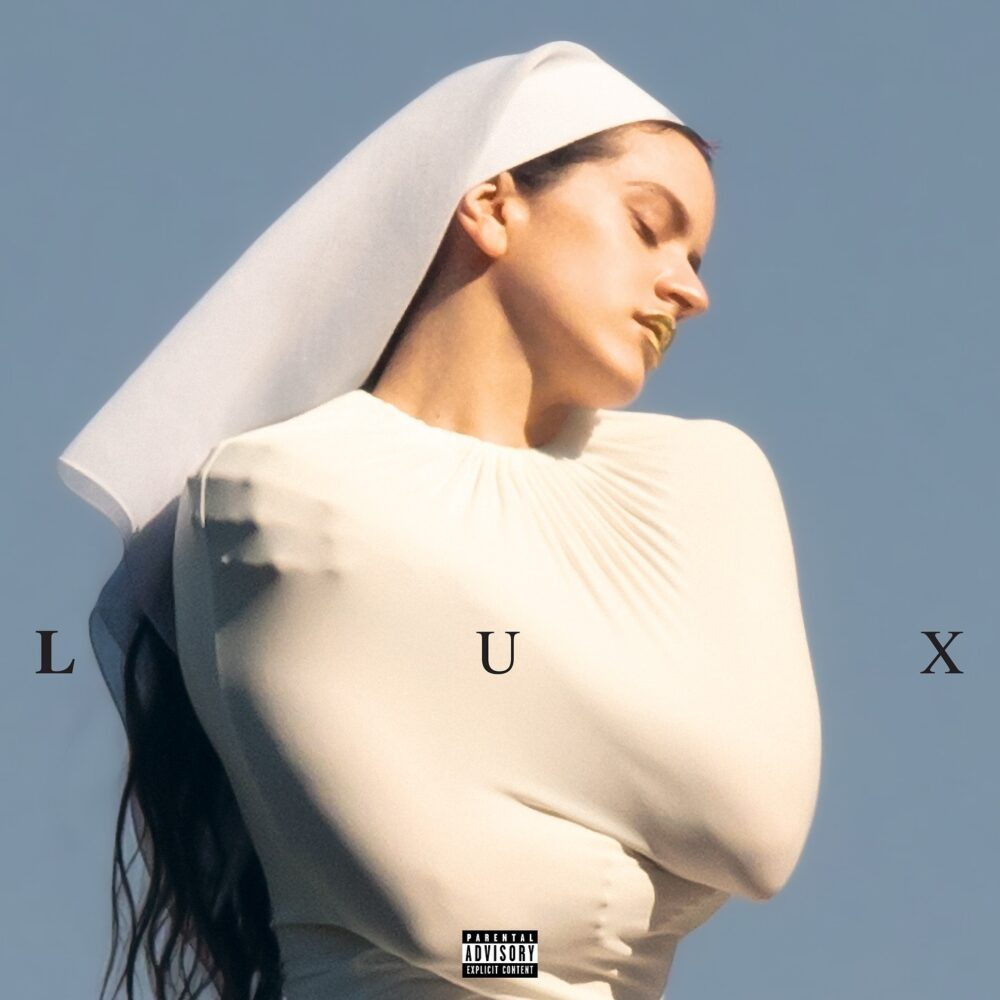

Sobre o POP
A música pop caracteriza-se pela acessibilidade melódica, ritmos envolventes e forte apelo comercial. Seu foco principal é a comunicação direta com um público amplo, utilizando estruturas musicais simples, refrões marcantes e produção sofisticada. Embora seja frequentemente associada à indústria cultural, o pop também cumpre um papel importante ao refletir tendências sociais, comportamentais e estéticas de cada época.
Ao longo das décadas, o pop incorporou elementos de diversos estilos — eletrônica, R&B, funk, reggae, entre outros — criando um campo musical flexível e dinâmico. No Brasil, artistas como Anitta e Luísa Sonza representam bem essa versatilidade
Artistas Pop
Aqui você encontra alguns artistas do pop brasileiro e internacional.
- Anitta
- Luísa Sonza
- Jão
- Dua Lipa
- Alice keys
Entre outros...


 




